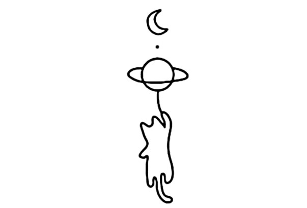

Academic Experiences:
- Undergraduate Research Intern at Bose Institute, India (2023-Present)
- Undergraduate Intern at IIT, Indore (2023)
- Content Editor in Physics at the Young Scientists Journal (2023-Present)
- Content Editor at the Journal of Young Physicists (2023-Present)
- Virtual Summer School Participant at IIA, Bangalore (2023)
- REYES Summer Program Participant at UC Berkeley (2023)
Papers & Presentations:
-
Emergence and Consciousness
-
On the Black Hole Infromation Paradox
-
The Fundamental Domain of Modular Group : Presented at Spectrum, 2025 along with Arpan Dey
-
Introduction to Astronomical Distances : Presented in XAS summer school 2023
-
Lunar Phenomenan and Physics : Presented as part of National Science Day, 2023
Skills:
- Python: Data Analysis, Modelling, Machine Learning: Scikit-learn, Astropy, Seaborn, GPy, Lightkurve
- CERN-ROOT, Geant4, NPTools, AZURE2 : Nuclear Physics Computation and Modelling
- C (Basic), JAVA (Working Proficiency), Gnuplot, LTSpice
- Latex, HTML
- Observational Astronomy: Telescope Handling
Roles & Responsibilities
- I secured the position of the Secretary of the Xaverian Astronomical Society (XAS) for the term 2024-25.
- I started as a student researcher and content writer in XAS and went on to mentor juniors in Astronomy projects, delivered talks as a student speaker in the Summer school organised by XAS, and lead actively in organising different seminars and events, including Astrovaganza (2025), the annual flagship event of XAS.
- I have been a student editor for Horizon, the annual magazine of the Department of Physics, St. Xavier’s College, Kolkata.
- I functioned as the Core Committee Member of Spectrum, the annnual fest of the Department of Physics, working as the Hospitality head and Overall Manager for 2024 and 2025 respectively.